Computer Aided Design
This is where I document the CAD assignment and learn using 2D raster & 2D vector software, 3D CAD software.
What I learned in this part
Raster
Crop
Resize
Straightening
Remove background
Vector
Trace bitmap (raster -> vector)
Basic tools -> spline/bezier curves lines, circles etc
AutoDesk Fusion 360
Making a dog tag
Making a desk caddy
Step by Step Documentation for Raster below:
Installing Inkscape:
First I go to this website to download and install inkscape:
Inkscape Download Link
 Figure
1: Downloading
Figure
1: Downloading
After installation, I ran the program and skipped the first few parts and got right in
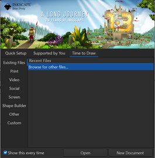
Figure 2: Running it for the first time
Cropping:
Afterwards I went online to grab an image for me to edit, Inkscape, meet Kirby!!
Time to crop kirby using inkscape

Figure 3: Opening up le kirb
To crop, first choose a vector shape, apply it on the canvas, then reduce its opacity to ensure the position is correct.

Figure 4: Sunglasses simulator
Select both the object and background using Shift + Left click, afterwards, click on Object > Clip > Set Clip
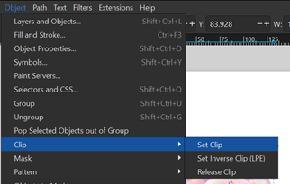
Figure 5: Software magic
Afterwards, you should have a complete crop. Well done!! If you do not want to crop, you can click on Object > Clip > Release Clip
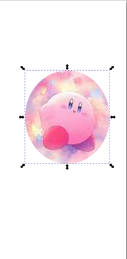
Figure 6: Uncropped vs cropped kirb
Resizing:
To resize documents, Click on File > Document Properties to access the document resizing
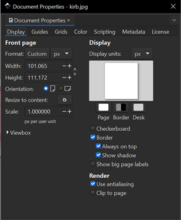
Figure 7: Click on resize to content
Figure 8: Rounded kirb
And that’s it for resizing documents
Straightening:
If the image contains some curved edges, you can use straightening to get rid of the curved edges.
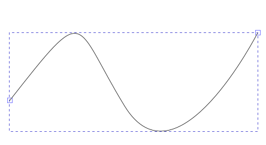
Figure 9: A random shape I drawn
With this weird line I just made, I am going to make the curved shapes into a straight line
By using the node tool, I can click on each of the node and manipulate it until it becomes straight-ish
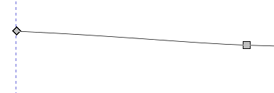
Figure 10: A straightish line
Step by Step Documentation for Vector below:
Trace bitmap (raster -> vector):
First we click on Path > Trace Bitmap to select the option.
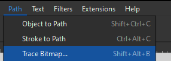
Figure 11: Trace bitmap
Afterwards, you can modify anything you want and click on apply to convert raster to vector
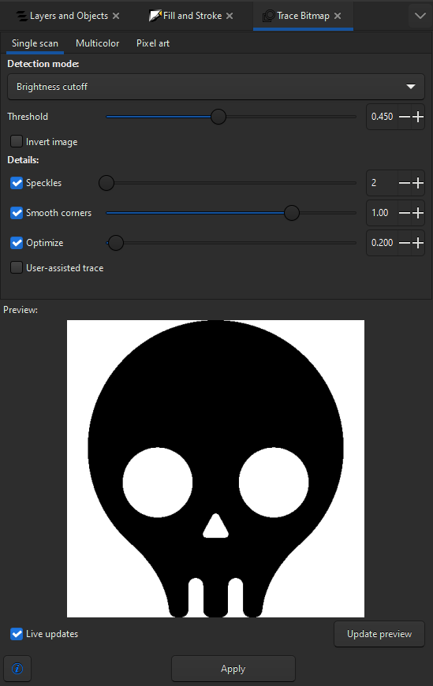
Figure 12: Modify (optional) before clicking on apply
After clicking on apply, the new vector graphic will pop up, zooming in shows that the curved edges are sharper.
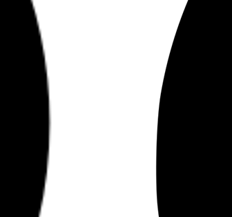
Figure 13: Left: Raster graphics Right: vector graphics after bitmap trace
AutoDesk Fusion 360:
Now, it is time to learn Autodesk Fusion 360. The item that I’m going to make is a dog tag.
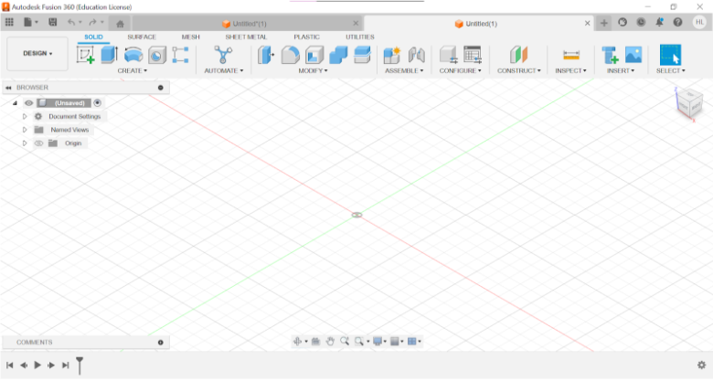
Figure 14: Fusion 360 User Interface
First, we start off using the sketch tool and sketch out a rectangle that is 70mm to 30mm in size.
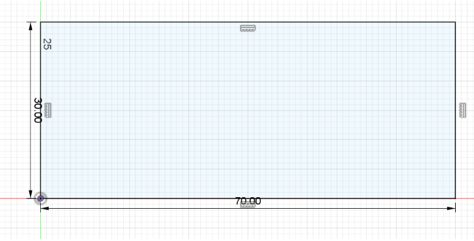
Figure 15: Erected a rectangle
After creating the rectangle, I use the fillet tool to create rounded angles for all 4 corners of the shape
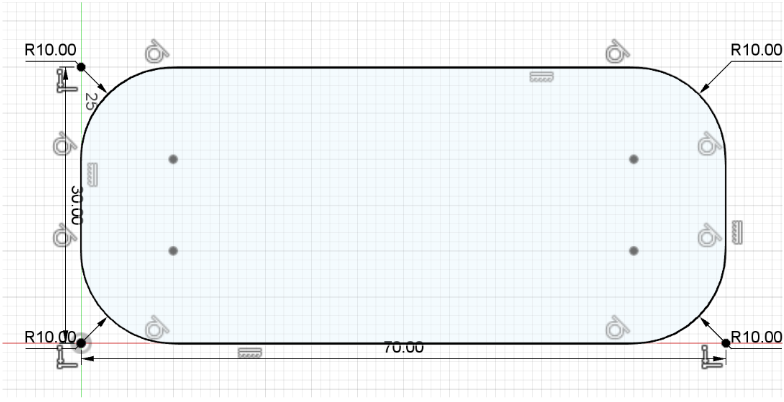
Figure 16: Rounded Apple looking ass shapes
When I’m done smoothing them out, I use the circle tool to create a hole for the chain to go through on the left side of the shape with dimensions: 8mm rad (Outer circle) 4mm (Inner circle)
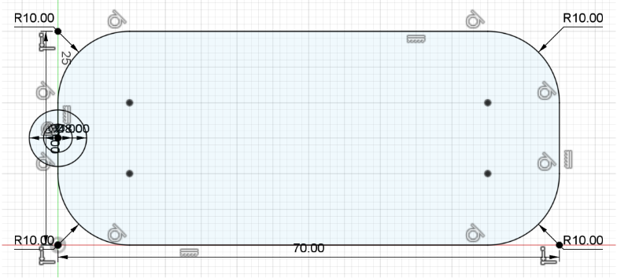
Figure 17: Creating hole to put chain/rope through
Afterwards, I select the outer circle and the rounded rectangle and extrude it to 5mm in thickness
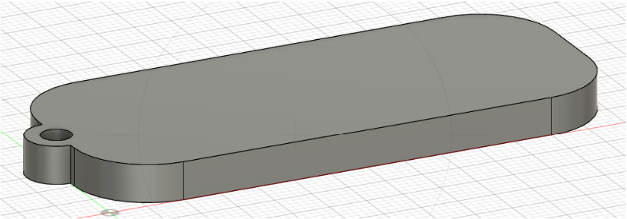
Figure 18: Now this looks like a dogtag ig?!?!?!!
After this, I have to carve my name into the dogtag by using the Sketch > Create > Text tool.
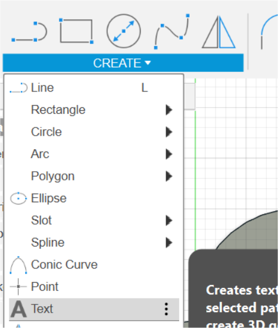
Figure 19: Insert text
Key in what you want and press ok

Figure 20: Dogtag with name on it
To insert an image/shape on it, you can use inkscape and generate a vector image. After you’re done, you can click on Insert > Insert SVG.

Figure 21: Inserting vector image
Afterwards, you can modify and change positions before putting it on the dogtag.

Figure 22: After a bit of fiddling around, we’re done!
Making a Accessory Box:
Now time for me to do another project to practice, a Accessory Box
First, I decide on some dimensions that I want:
Length: 130mm
Height: 80mm
Width: 130mm
Open up Autodesk and set the different parameters of the box dimensions

Figure 1: After a bit of fiddling around, we’re done!
Using the parameters set to create the square base of the box that is 130 x 130 x 3mm in dimensions.

Figure 2: Squaring up a square
Use project tool to mark the left side of the square and draw a rectangle and set the joints in a corner and create a new component (left side).


Figure 3&4: Creating rectangle and extruding it
Now, I want to create a mirror edge of the left part to the right, to do so, I use the Contruct > midplane tool to create a midplane in order to perform mirroring
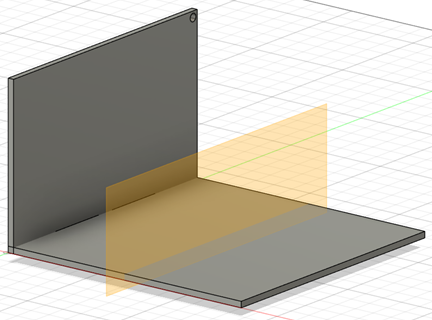
Figure 5: Midplane
After the mirroring process, I hid the midplane and used the combine tool to cut and keep tools to give each component the butt joints.
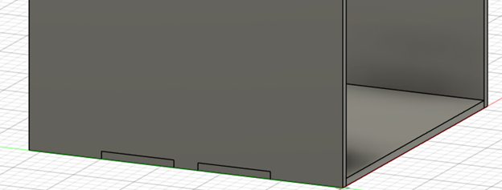
Figure 6: Combined parts
Now, I am going to create the back plate for the box using the dimensions 130 x 80 mm and 130
mm diameter circle.


Figure 7: Back plate before and after
Afterwards, I use the offset tool to create a “square” (127 x 130 mm) in the middle of the object at around 27mm with cutouts on the side for the middle platform to sit on. After all of those, extrude the square by 3 mm.

Figure 8: Created border for the accessory box
Moving on to the front of the box where the top of the box is, use the offset plate to reach the front and use project to find the edges of the box before starting to sketch a rectangle (47 x 124 mm) and extrude it to 3mm.

Figure 9: Front of accessory box

Figure 10: Front completed
Now, it’s time for me to create the drawer inside the box. Base (124 x 127 mm), left and right (127 x 27), Back and front(124 x 27) with a circle cut off in the front for accessing bottom drawer (14 mm radius)


Figure 11 & 12: Drawer of accessory box
I create holes on the left and right side of the box (Outer: 8 diameter inner: 5 diameter) for the lid of the box to sit in

Figure 13: Creating holes on side
I add a offset plate at 80mm and create the cover on the top of the box with a shape of (124 x 127mm), a extra cutout on the front (30 x 3mm) for easy access and pegs on the side for the hinges (3 x 4mm)


Figure 14 &15 Creating cover
To make the lid flush with the entire box, I can use the push/pull tool on the left, right and front sides of the box

Figure 16: Making surfaces flush
To make the lid flush with the entire box, I can use the push/pull tool on the left, right and front sides of the box
Making a Phone Holder:
Now time for me to do create something inside of Fusion 360, a Phone holder
First, I will go online to check the dimensions of a Samsung Galaxy S23 Ultra if I want to make a phone holder that supports a majority range of devices and has ample stability. The phone’s dimensions are: 146.3 x 70.9 x 7.6 mm.
Now, to look for inspiration online, I want to have a simple but effective phone holder
Design Choice: solid 1 piece phone holder that has a hole in the holder for easy access of charging cable
So I’m going to use this phone holder as inspiration for my phone holder https://cults3d.com/en/3d-model/gadget/phone-holder-cadastrophe. After measuring the different parts of the holder, I collated the list of parameters as shown below
90 x 80 mm (Base)
3 mm (Thickness)
110 mm (height)
45 deg (angle of holder)
85 mm (holder’s length)
13 mm (size of holder)
So it looks something like this:

Figure 1: Sketching of design
After sketching out the general shape, I will right click the shape and extrude it to 80mm so it looks like the image below:

Figure 2: Phone holder without charging holes
Now to cut out the shape on the holder, to do so, I need to sketch out a rectangle (40 x 25mm) in the middle to cut out the hole for the charger cable access to the phone’s port and cut it away using the extrude tool

Figure 3: Cutting out hole

Figure 4: End product
After this is done, I go to the back and draw a circle (20 rad) at the back for any cable to come through

Figure 5: Cut out hole for chargers
This is it for the main part of the phone holder, I want to add another feature to it, a loudspeaker feature.
To start off, I create a shape at the end of the holder part that is the shape of a rectangle

Figure 6: Design shape
After I sketched the shape, I extrude it to the left (80mm) to completely fill up the bottom, I use the shell tool to carve a hole in the middle with a thickness of 2mm, I extrude the end of the rectangle and extrude the remaining distance, hollowing it out.

Figure 7: Shelling & hollowing
Next, I design the hollow rectangle to have a hole on top for the phone to sit through with the dimensions of (40 x 9 mm) and cut out the shape with the extrude tool


Figure 8&9: Hole for the phone to come through
For the final part of the design, I choose to cut out a small hole at the bottom for the charging cable to come through. Dimensions (10 x 3 mm).

Figure 10: Location of charging hole
Afterwards, I cut out the hole at the bottom of the holder with the extrude tool and that is all for the extra feature!!

Figure 11: Charging hole
This is all for now!!